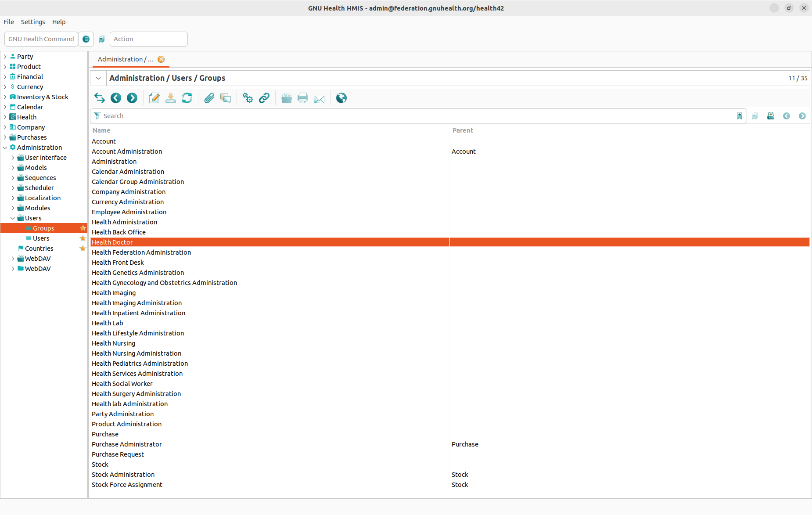
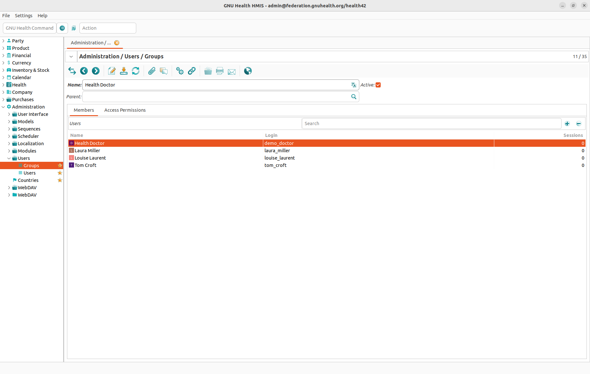
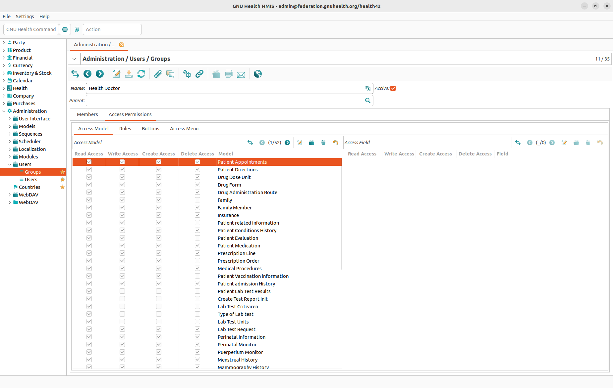
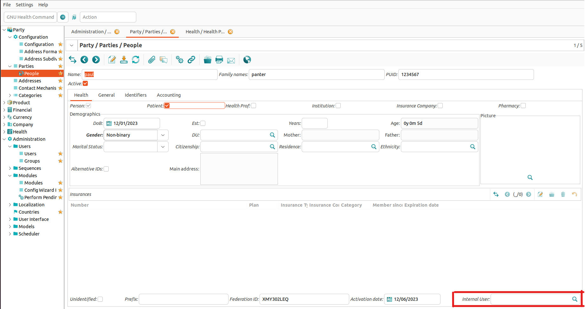
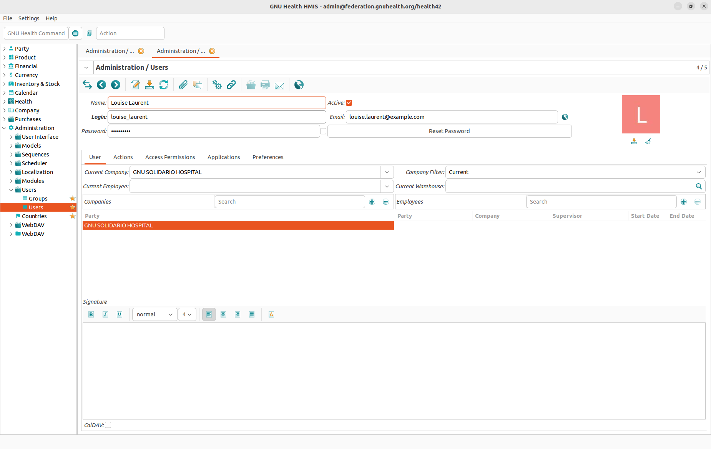

Access Management
Access Management Overview
Like in many other IT systems, access to data and functions in GNU Health is controlled through groups (also known as roles). A group is a set of access rights. By assigning a user (also known as account or login) to a group, this user gains all rights of this group.
Groups


To create, edit, or delete groups, please go to the Administration → Users → Groups section. Create a new group or double click an existing group to open the Groups form. All data in this form is divided into two tabs:
Members Tab


The Members tab lists all users that have been assigned to this group. You can add users to the group here, or you can double click on a user to see this users details.
It is a safe practice to define all access rights of a group first and add users to the group later.
Access Permissions Tab


The Access Permissions tab defines the access rights of a group. There are four types of rights that can be granted to a group:
Access to a certain model: This allows to grant the right to read, write, create and/or delete records of a certain record type (or model as it is called in GNU Health).
Access to a certain field: This allows to grant the right to read, write, create and/or delete data in certain field. While field access is not as commonly used as model access, this option allows you to fine tune your access permission and to protect sensitive data.
Access to a certain menu item: This allows to show or hide sections in the main navigation. It is a good practice to hide sections where a group should not or cannot edit data to simplify the user interface.
Access to a certain rule
Users
To create, edit, or delete users, please go to the Administration → Users → Users section. Create a new user or double click an existing user to open the Users form.
Every user needs a Name (which is a descriptive name, not the user name for logging into the system) and a Status (which is active or not active and defines if a user can log into the system at all).
Users are bare accounts to log into the GNUHealt server, not a Person in the system. To link a User and a Person you need to set the Internal User field in the Person-form to the User that is already created. To do this follow Party->Parties->People choose or create an object of People that represets a person in the system. The field can be found in the bottom right of the form.


Note
For more details, please refer to the People chapter.
Going back to Administration → Users → Users we have five different tabs:
User Tab


The User tab contains the very basic information about a user:
Name: Internal name for the User, not used for the login.
Login: This is the user name for logging into the system and cannot be empty. It must be unique, that is to say that you can not have to users with identical logins.
Password: This is the password for logging into the system. When entering a password you can check the checkbox on the right hand side of the Password field to see what you are entering.
Email: If you enter a user’s email address here, clicking on the globe icon on the right hand side of the Email field opens a new mail in your email client.
Actions Tab
In this tab, you can add or remove Actions. These actions are automaticly launched when the user logs into their account. The maximum of Actions is 5 by default.
Access Permissions Tab
In the Access Permissions tab a user can be assigned to one or more groups. Please be aware that not assigning groups here will lead to users who can log into the system but not do anything within the system.
Applications Tab
Todo
Fill User Guide -> Health Center -> Access Management -> Applications Tab
Preferences Tab
In the Preferences tab you can set the preferred language of a user.